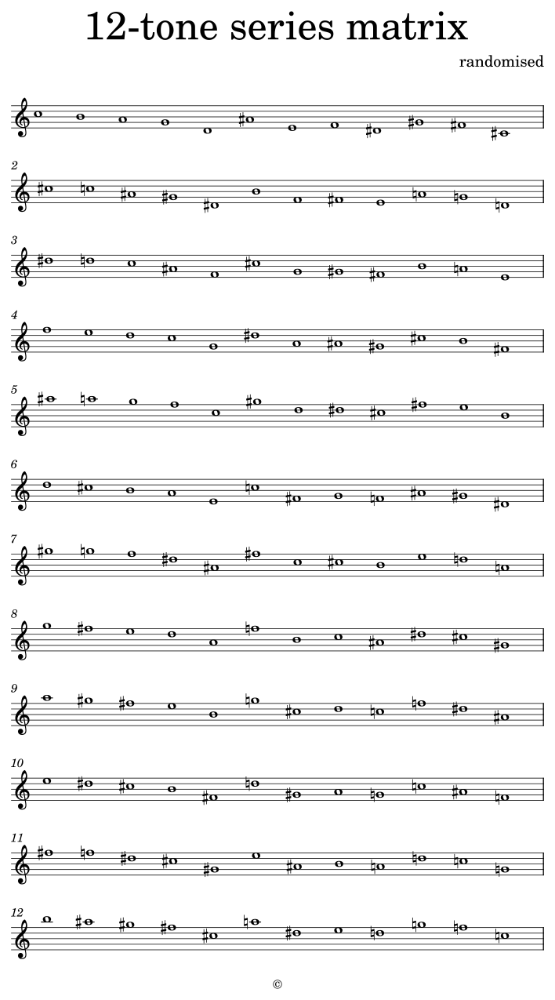

Notator : Object
 Extension
Extension
ExtensionDescription
Using the Notator class, you can play the score via the sc-server and create musicXML files to seamlessly edit the score created in sclang in your favourite music notation software that supports musicXML 4.0 (or higher) import. It provides the following automated functions:
- export a musicXML file and automatically open it in a music notation program,
- create an SCD file and automatically load and open it to play music:
- all standard and abbreviated notation is rewritten;
- adds a new code block to play the transcribed code;
- tied notes and articulation are applied for playback;
- tries to associate the staff label with the same name as
SynthDef.Synth(\default)will be used if the same defname is not found with the staff label.
You can print (or make a PDF of) the musicXML file without editing it, but you should edit and modify the score, since the Notator class is not intended for engraving music, but for composing seamlessly from music designed with SuperCollider.
This section covers only the basic usage of the Notator. For details, refer to Score Guideline for Notator. For simpler and eleganter examples using algorithmic code construction, refer to the following examples in Example section:
- Eighth-tone Scale through algorithmic construction
- Twelve-tone matrix through algorithmic construction
Basic use
The musical notation for the Notator class is constructed as an array instance, each element of which represents the contents of a particular bar. The first element of the array instance, i.e. index 0 of the array instance, is assigned information about the title, composer and copyright of the piece, and the index of the first and subsequent bar contents starts from index 1. The voice number can vary from bar to bar, but the voice number of joined notes (or joined chords) by a tie across the bar line should be the same voice. The bar number and the index of the array instance are therefore identical. The basic usage of Notator is as follows:
| Standard
Notation
(Array- in- Array Notation) | |
| Syntactic
Sugar | |
| Access
to results |
|
There are three ways of notating musical information for Notator, i.e. score construction using:
- Array-in-Array Notation:
an array for each musical entry.
- Symbol-in-Array Notation:
a string or symbol for each musical entry.
- String Notation:
a string for the musical entry of a voice.
There would be many possibilties of playing the score according to the characteristic of music and the work style of users. In this help document, the simplest way which provided by the Notator class is provided.
Example
In this examples, Dorico 4 is used to open musicXML since MuseScore does not correctly show nested tuplets in the bar 2.
|

Class Methods
Notator.notate(score, musicXMLfilePath, app: "MuseScore 4")
Arguments:
| score | A unique construction of musical notation information in the form of arrays and events. |
| musicXMLfilePath |
Path for musicXML file |
| app |
Application that is launched when a musicXML file is saved. |
Inherited class methods
Undocumented class methods
Notator.parseStringAndSymbol(stringOrSymbolOrArray)
Notator.stringToArray(input)
Instance Methods
Inherited instance methods
Examples
Eighth-tone Scale through algorithmic construction
| The
desired score |  |
| Array
per
Entry
(Array- in- Array Notation) |
Twelve-tone matrix through algorithmic construction
| A
possible score | 
|
| Array
per
Entry
(Array- in- Array Notation) |
Default staves and default instrument (piano)
| The
desired score | In this examples, Dorico 4 is used to open musicXML since MuseScore does not correctly show nested tuplets staves.
| |
| Array
per
Entry
(Array- in- Array Notation) | ||
| Symbol
(or string)
per
Entry
(Symbol- in- Array Notation) | ||
| String
per
Whole Entries per Voice
(String Notation) |

Nested tuplets and multiple voices
| The
desired score |
| |
| Array
per
Entry
(Array- in- Array Notation) | ||
| Symbol
(or string)
per
Entry
(Symbol- in- Array Notation) | ||
| String
per
Whole Entries per Voice
(String Notation) |

link::Classes/Notator::